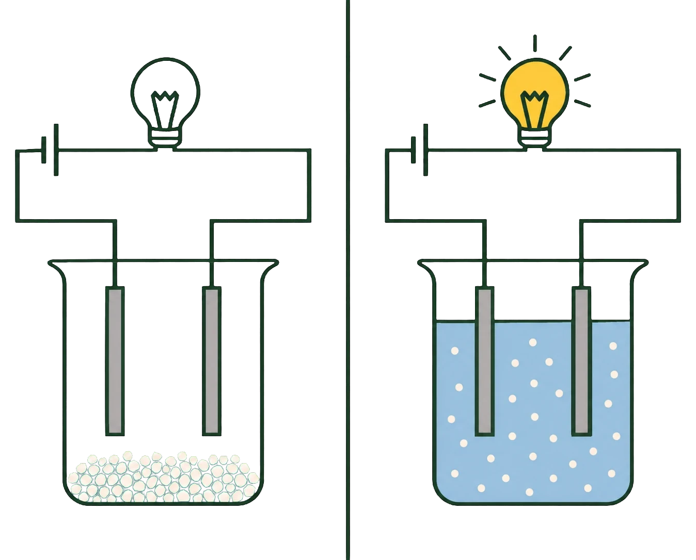
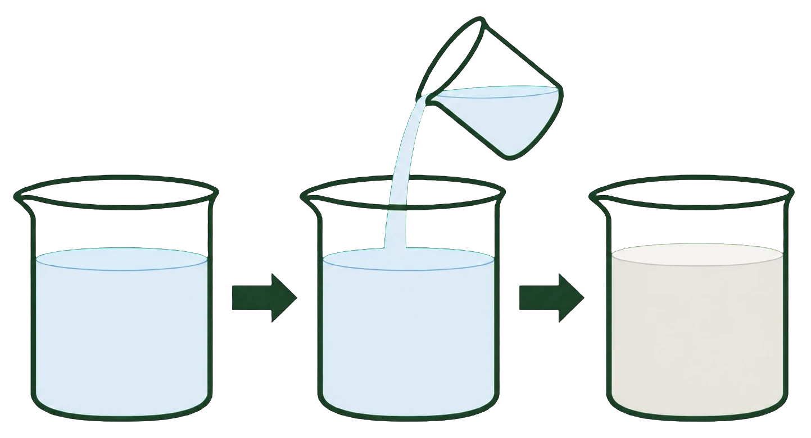

- Vattenmolekylerna drar isär jonerna i gittret
- Det fungerar eftersom vatten är polärt
- Jonerna blir fria i lösningen
- De försvinner inte — de är bara inte längre bundna
- (s) betyder fast ämne, (aq) betyder löst i vatten
Du vet redan hur salt löses i vatten — det kom i repetitionens sista avsnitt. Här repeterar vi det snabbt och lägger till ett nytt skrivsätt.
Vattenmolekylerna vänder rätt sida till
Vattenmolekylen är polär. Den har en svagt negativ sida vid syreatomen och svagt positiva sidor vid väteatomerna.
Det betyder att den kan vända rätt sida mot varje jon. Mot en positiv jon vänder den syresidan, mot en negativ vänder den vätesidorna.
Många drar samtidigt
En ensam vattenmolekyl skulle inte kunna göra något. Men runt varje jon i saltkristallens yta samlas flera vattenmolekyler, och de drar alla åt samma håll.
Blir dragningen starkare än den attraktion som håller kvar jonen i gittret, lossnar jonen och glider ut i vattnet.
Jonerna finns kvar
Här är det viktigt att inte missförstå vad som hänt.
Saltet har inte förvandlats till något annat. Jonerna finns kvar, exakt lika många som förut. Skillnaden är att de inte längre sitter fast i ett gitter — de rör sig fritt, var och en omgiven av vattenmolekyler.
Ett nytt skrivsätt
När man skriver upplösningen som en formel används två beteckningar du inte sett förut:
NaCl(s) \(\rightarrow\) \(\ce{Na+}\)(aq) + \(\ce{Cl-}\)(aq)
(s) står för solid och betyder att ämnet är i fast form.
(aq) står för aqua och betyder att partikeln är löst i vatten.
Formeln säger alltså: fast natriumklorid blir till fria natriumjoner och kloridjoner i vattenlösning.
Du kommer att se de här beteckningarna igen, särskilt i delkapitlet om elektrokemi.
- Vad gör vattenmolekylerna med jongittret?
- Varför fungerar just vatten så bra?
- Vad händer med jonerna?
- Vad betyder (s) och (aq)?
- Försvinner jonerna när saltet löses?
Vattenmolekylernas polaritet drar isär gittret
När ett salt läggs i vatten påverkas jonerna i gittret av vattenmolekylerna. Vattenmolekylen är polär och har en svagt negativ sida vid syreatomen och svagt positiva sidor vid väteatomerna.
Det gör att vattenmolekyler kan orientera sig efter jonernas laddning. Syresidan vänds mot positiva joner och vätesidorna mot negativa joner. Runt varje jon i kristallens yta samlas därför flera vattenmolekyler, alla vända åt samma håll.
Deras sammanlagda attraktion kan bli tillräckligt stor för att övervinna de krafter som håller jonen kvar i gittret. Jonen lossnar då och sprids ut i lösningen, omgiven av ett skal av vattenmolekyler som följer med den.
Processen fortsätter lager för lager, från kristallens yta och inåt, tills allt salt är löst eller lösningen blivit mättad.
Jonerna finns kvar men är inte längre bundna
Det är viktigt att notera att jonerna inte försvinner när saltet löses. De finns kvar i lösningen, exakt lika många som i kristallen, men är inte längre bundna till varandra i ett gitter.
Skillnaden är alltså inte att något nytt ämne bildats, utan att partiklarna blivit fria att röra sig. Låter man vattnet avdunsta kommer jonerna att söka sig till varandra igen och bilda ett nytt jongitter. Saltet återbildas.
Det är därför upplösning av salt räknas som en fysikalisk förändring snarare än en kemisk. Inga bindningar inuti partiklarna har brutits, bara de krafter som höll dem samlade.
Beteckningarna (s) och (aq) visar i vilken form ämnet finns
Upplösningen kan skrivas som en reaktionsformel:
NaCl(s) \(\rightarrow\) \(\ce{Na+}\)(aq) + \(\ce{Cl-}\)(aq)
Beteckningen (s) kommer av engelskans solid och anger att ämnet är i fast form. Beteckningen (aq) kommer av latinets aqua och anger att partikeln är löst i vatten.
Sådana tillståndsbeteckningar används när det är viktigt att visa i vilken form ett ämne finns. De förekommer också som (l) för vätska och (g) för gas.
Formeln ovan säger alltså: fast natriumklorid övergår till fria natriumjoner och kloridjoner i vattenlösning. Tillståndsbeteckningarna kommer att användas genomgående i delkapitlet om elektrokemi.
Vad (aq) egentligen döljer
Standardtexten säger att (aq) betyder löst i vatten. Det är korrekt men undanhåller något.
En jon i lösning är inte ensam. Den är omgiven av ett skal av vattenmolekyler som orienterat sig efter dess laddning och följer med den när den rör sig. Fenomenet kallas hydratisering.
Skalets storlek beror på jonens laddning och storlek. En liten jon med hög laddning drar till sig fler vattenmolekyler och binder dem hårdare.
Det leder till något oväntat: litiumjonen är den minsta alkalimetalljonen men den största i lösning, eftersom den drar till sig det tjockaste vattenskalet. I en lösning rör sig litiumjoner därför långsammare än kaliumjoner, trots att litiumatomen är mindre.
Varför vissa upplösningar kyler och andra värmer
Hydratiseringen förklarar också energibalansen du mötte i repetitionsavsnitt 5.
Att bryta upp gittret kostar energi — det är gitterenergin från avsnitt 1. Att hydratisera jonerna frigör energi, eftersom nya attraktioner bildas mellan joner och vattenmolekyler.
Är hydratiseringsenergin större än gitterenergin blir lösningen varm. Är den mindre blir lösningen kall, eftersom skillnaden tas från omgivningen.
Natriumhydroxid har små joner med stark hydratisering och blir därför mycket varm. Ammoniumnitrat har stora joner med svag hydratisering och blir kall — vilket är precis vad kylpåsar utnyttjar.
Om modellen: standardtexten beskriver upplösning som att vattenmolekyler drar loss joner. Med hydratiseringen blir det en energiräkning med två poster, och utfallet avgör både om ämnet löser sig och om det blir varmt eller kallt.
- Fast salt leder inte ström
- Saltlösning gör det
- Skillnaden är att jonerna kan röra sig
- Laddningarna finns i båda fallen
- Även smält salt leder ström
Du vet sedan tidigare att saltlösning leder ström. Nu ska vi titta på varför inte fast salt gör det — och svaret är enklare än man tror.
Laddningarna finns där hela tiden
Ett saltkorn är fullt av laddningar. Miljarder positiva och negativa joner, tätt packade.
Ändå leder det inte ström. Ett torrt saltkorn mellan två sladdar får ingen lampa att lysa.
Rörelsen är det som saknas
Anledningen är att jonerna sitter fast. Varje jon har sin bestämda plats i gittret och hålls där av krafterna från alla sina grannar.
Elektrisk ström är laddning som rör sig. Finns laddningarna men kan inte flytta sig, blir det ingen ström.
Löser man saltet ändras allt
Häll saltet i vatten och jonerna lossnar från gittret. Nu kan de simma fritt genom vätskan.
Koppla in strömmen, och de positiva jonerna börjar röra sig åt ena hållet och de negativa åt andra. Laddning transporteras genom lösningen, och lampan lyser.
Samma joner, samma laddningar — men nu rörliga.
- Vad som finns i det vänstra glaset
- Vad som finns i det högra
- Vilken lampa som lyser
- Om jonerna finns i båda glasen

Smält salt fungerar också
Det finns ett andra sätt att göra jonerna rörliga: värma saltet tills det smälter.
I en saltsmälta finns inget vatten alls, men jonerna rör sig fritt eftersom gittret brutits upp av värmen. En sådan smälta leder ström lika bra som en lösning.
Det blir viktigt i delkapitlet om elektrokemi, där man använder både lösningar och smältor för att driva kemiska reaktioner med elektricitet.
- Varför leder inte fast salt ström?
- Vad ändras när saltet löses?
- Vad krävs för att något ska leda ström?
- Leder smält salt ström?
- Vad har detta med elektrokemi att göra?
Fast salt leder inte ström trots att det består av joner
Ett salt i fast form leder inte elektrisk ström, trots att det helt och hållet består av laddade partiklar. Ett torrt saltkorn placerat mellan två elektroder får ingen lampa att lysa.
Orsaken är att jonerna sitter fast på bestämda platser i jongittret. Varje jon hålls där av krafterna från alla sina grannar, och den kan inte flytta sig ur sitt läge.
Laddningarna finns alltså där, i mycket stort antal, men de är låsta.
Ström innebär att laddning transporteras
Elektrisk ström innebär att laddning förflyttas genom ett material. För att ett ämne ska leda ström krävs därför att det innehåller laddningar som kan röra sig.
I en metalltråd är det elektronerna som rör sig. I en saltlösning är det i stället jonerna själva som vandrar genom vätskan.
När saltet löses i vatten frigörs jonerna från gittret och kan röra sig fritt. Kopplas en spänning till lösningen vandrar de positiva jonerna mot den ena elektroden och de negativa mot den andra. På så sätt transporteras laddning genom vätskan, och lösningen leder ström.
Ju fler rörliga joner lösningen innehåller, desto bättre leder den.
Smält salt leder också, och det utnyttjas inom elektrokemin
Samma sak gäller om saltet i stället smälts. I en saltsmälta har jongittret brutits upp av värmen, och jonerna kan röra sig fritt även utan att något vatten är inblandat.
En saltsmälta leder därför elektrisk ström lika väl som en lösning gör.
Skillnaden mellan fast salt och löst eller smält salt är alltså framför allt jonernas möjlighet att röra sig. Ämnet är detsamma, jonerna är desamma, och antalet laddningar är detsamma. Det enda som ändrats är rörligheten.
Detta har stor betydelse inom elektrokemin, där både saltlösningar och saltsmältor används för att driva kemiska reaktioner med hjälp av elektrisk ström.
Elektronledare och jonledare
Standardtexten säger att ström kräver rörliga laddningar. Men laddningarna kan vara av två helt olika slag, och skillnaden är grundläggande.
I en metalltråd är det elektroner som rör sig. Jonerna sitter stilla i gittret, precis som i ett salt, men elektronhavet är fritt. Sådana material kallas elektronledare.
I en saltlösning är det jonerna själva som rör sig. Hela partiklar med sin massa vandrar genom vätskan. Sådana material kallas jonledare, eller elektrolyter.
Skillnaden får praktiska följder. En metall leder ström utan att förändras — koppartråden är likadan efteråt. En elektrolyt förändras däremot: jonerna samlas vid elektroderna och reagerar där.
Därför sker kemi i en elektrolyt
Det är precis det som gör elektrokemin möjlig.
Skickar man ström genom en koppartråd händer ingenting kemiskt. Skickar man ström genom en saltlösning händer det något vid varje elektrod: joner tar upp eller avger elektroner och omvandlas till nya ämnen.
En elektrolyt är alltså inte bara en ledare utan en plats där reaktioner sker.
Varför rent vatten leder dåligt
En sista sak som förklarar en vanlig observation.
Rent vatten leder ström mycket dåligt, men inte alls. Som du såg i syrornas fördjupning innehåller vatten små mängder oxonium- och hydroxidjoner från sin egen reaktion — omkring en molekyl av en halv miljard.
Det räcker för en svag ledningsförmåga, men bara en svag. Kranvatten leder betydligt bättre, eftersom det innehåller lösta salter från marken det passerat.
Om modellen: standardtexten behandlar ledningsförmåga som en egenskap ett ämne har eller inte har. Med skillnaden mellan elektron- och jonledning blir det två olika fenomen — och bara det ena kan driva kemi.
- Olika salter löser sig olika bra
- Vissa löser sig knappt alls
- Blandar man två lösningar kan ett svårlösligt salt bildas
- Det faller ut som fast ämne — en fällning
- Fällningar kan användas för att ta reda på vilka joner som finns
Alla salter löser sig inte lika bra. Det mötte du redan i repetitionen — koksalt löser sig utmärkt, kalk knappt alls.
Löslighet varierar kraftigt
Vissa salter är lättlösliga. Nästan allt du häller i går i lösning, och det krävs mycket innan lösningen blir mättad.
Andra är svårlösliga. Bara en försvinnande liten mängd löser sig, och resten ligger kvar som ett pulver på botten.
Skillnaden kan vara enorm. I en liter vatten löser sig ungefär trehundrafemtio gram koksalt — men bara någon tusendels gram silverklorid.
När två lösningar möts
Här kommer det som är nytt.
Tänk dig att du har två olika saltlösningar, båda helt klara. I den ena finns silverjoner, i den andra kloridjoner.
Häller du ihop dem finns plötsligt båda jonslagen i samma vätska. Och silverjoner och kloridjoner bildar tillsammans silverklorid, som knappt löser sig alls.
Jonerna söker sig då till varandra och bildar ett fast ämne som faller ut ur lösningen. Vätskan blir grumlig, och efter en stund ligger ett vitt lager på botten.
- Hur vätskan ser ut i första steget
- Vad som händer i andra steget
- Vad som syns på botten i tredje steget
- Om något nytt har tillförts utifrån

Det kallas en fällning
Det fasta ämnet som bildas kallas en fällning, och reaktionen kallas en fällningsreaktion.
Reaktionen kan skrivas så här:
\(\ce{Ag+}\)(aq) + \(\ce{Cl-}\)(aq) \(\rightarrow\) AgCl(s)
Lägg märke till beteckningarna. Jonerna är lösta i vatten, (aq), och det som bildas är fast, (s).
Fällningar kan avslöja joner
Och här blir det användbart.
Har du en okänd lösning kan du ta reda på vad den innehåller genom att tillsätta olika ämnen och se vad som händer. Bildas en vit fällning när du tillsätter silverjoner innehöll lösningen troligen kloridjoner.
Det är ett sätt att få information om partiklar som är alldeles för små för att se — genom en reaktion som syns med blotta ögat.
- Löser sig alla salter lika bra?
- Vad händer när två saltlösningar blandas?
- Vad är en fällning?
- Hur skrivs en fällningsreaktion?
- Vad kan fällningar användas till?
Salter löser sig olika bra i vatten
Alla salter är inte lika lättlösliga. Vissa löses lätt och finns då som fria joner i lösningen. Andra är svårlösliga och löser sig bara i mycket små mängder.
Skillnaderna är stora. I en liter vatten kan omkring 350 gram natriumklorid lösas, medan silverklorid bara löser sig i storleksordningen tusendels gram.
Lösligheten beror på förhållandet mellan två saker: hur starkt jonerna hålls samman i gittret, och hur starkt vattenmolekylerna attraherar dem. Är gitterkrafterna starkare än vattnets dragning löser sig ämnet dåligt.
Salter med tvåvärda eller trevärda joner har ofta starkare gitter och är därför oftare svårlösliga än salter med envärda joner.
När två lösningar blandas kan ett svårlösligt salt bildas
När två olika saltlösningar blandas finns flera jonslag i samma lösning samtidigt. I vissa fall kan två av dessa joner tillsammans bilda ett salt som är svårlösligt.
Jonerna förenas då och bildar ett fast ämne som avskiljs ur lösningen. Detta kallas en fällning, och reaktionen kallas en fällningsreaktion.
Ett tydligt exempel är när silverjoner möter kloridjoner. Tillsammans bildar de det mycket svårlösliga saltet silverklorid:
\(\ce{Ag+}\)(aq) + \(\ce{Cl-}\)(aq) \(\rightarrow\) AgCl(s)
Beteckningen (aq) visar att jonerna är lösta i vatten, medan (s) visar att silverkloriden är ett fast ämne. Lösningen blir grumlig, och efter en stund lägger sig fällningen som ett vitt lager på botten.
Lägg märke till att bara två av de fyra jonslagen deltar. De övriga finns kvar lösta i vätskan, på samma sätt som åskådarjonerna vid en neutralisation.
Fällningar kan användas för att identifiera joner
Fällningsreaktioner kan användas för att undersöka vilka joner en lösning innehåller. Om tillsatsen av en viss lösning ger en karakteristisk fällning ger det information om det ursprungliga provets sammansättning.
Metoden bygger på att olika fällningar ser olika ut. Silverklorid är vit, silverjodid är gulaktig, och flera metallhydroxider har egna färger.
På så sätt kan en reaktion som syns för ögat användas för att dra slutsatser om partiklar som är alldeles för små att se. Det är ett av de äldsta analysverktygen inom kemin, och det används fortfarande i skollaboratorier och inom vattenanalys.
Vilka salter är lösliga?
Standardtexten säger att salter löser sig olika bra. Det finns mönster i det, och de är användbara nog att vara värda att lära sig.
Nästan alltid lösliga: salter med natrium, kalium eller ammonium som positiv jon. Också nitrater.
Nästan alltid svårlösliga: karbonater, fosfater och sulfider — utom när den positiva jonen är någon av de nyss nämnda.
Oftast lösliga men med undantag: klorider är lösliga utom med silver och bly. Sulfater är lösliga utom med barium, bly och kalcium.
Med de här reglerna kan man förutsäga om en fällning bildas. Blandar man natriumklorid och kaliumnitrat händer ingenting — alla fyra kombinationer är lösliga. Blandar man silvernitrat och natriumklorid faller silverklorid ut.
Varför nitrater alltid löser sig
Regeln har en förklaring, och den knyter till sammansatta joner från avsnitt 2.
Nitratjonen är stor och har sin negativa laddning utspridd över flera atomer. Det ger låg laddningstäthet, och därmed svag attraktion till den positiva jonen i gittret.
Gitterenergin blir alltså låg, och hydratiseringen räcker för att övervinna den. Nitrater löser sig därför i praktiken alltid.
Karbonatjonen har också utspridd laddning — men den är tvåvärd, och dubbla laddningen ger mycket starkare gitter. Därför är karbonater tvärtom oftast svårlösliga.
Varför fällningar är skarpa
En sista sak som förklarar varför metoden fungerar så bra för identifiering.
När en fällning bildas händer det plötsligt. Lösningen är klar, man tillsätter en droppe, och grumligheten uppstår omedelbart.
Det beror på att jonerna redan finns utspridda i lösningen och bara behöver mötas. Ingen energibarriär behöver övervinnas, ingen upphettning krävs. Reaktionen sker så fort partiklarna kolliderar.
Det är därför fällningsreaktioner är ett så pålitligt analysverktyg: resultatet syns direkt, och det är entydigt.
Om modellen: standardtexten konstaterar att vissa salter är svårlösliga. Med löslighetsreglerna blir det något man kan förutsäga, och med laddningstätheten blir reglerna själva förklarade.
Laddar övningskort…
Laddar frågor ...